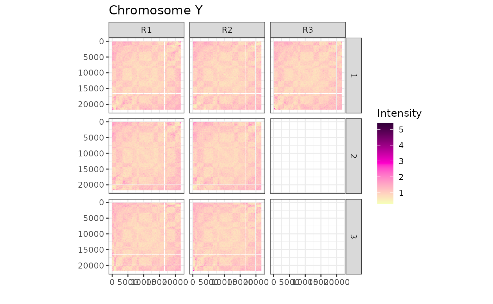
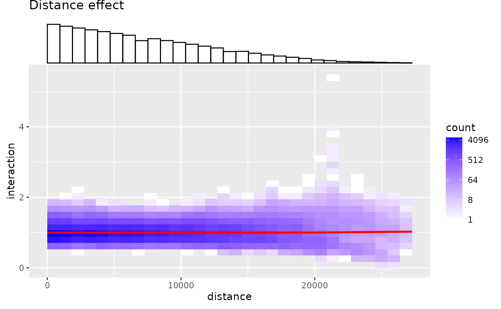
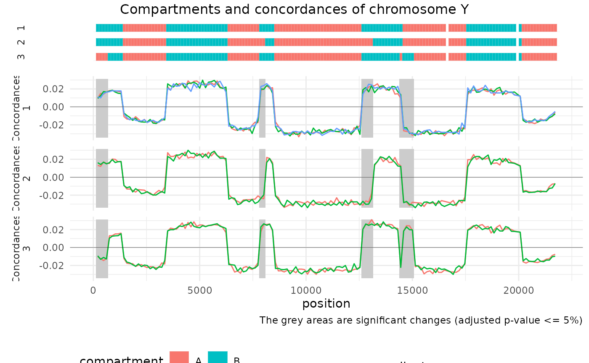
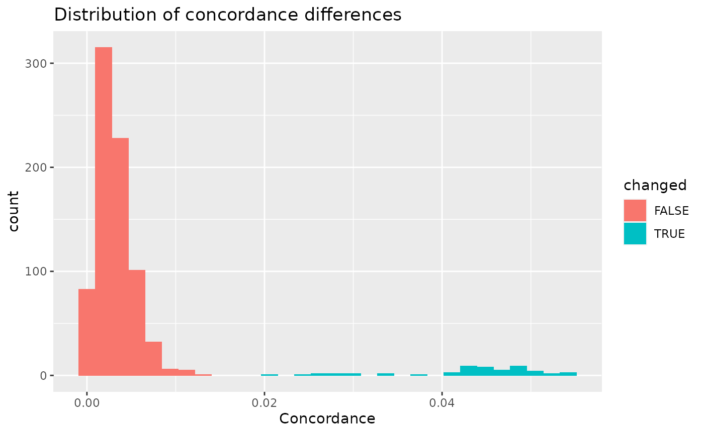
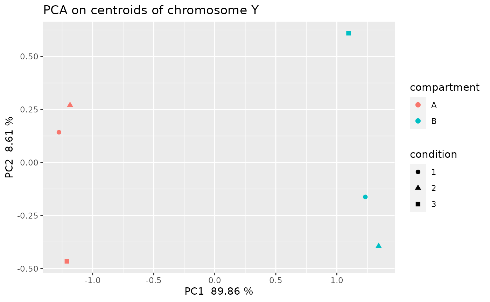
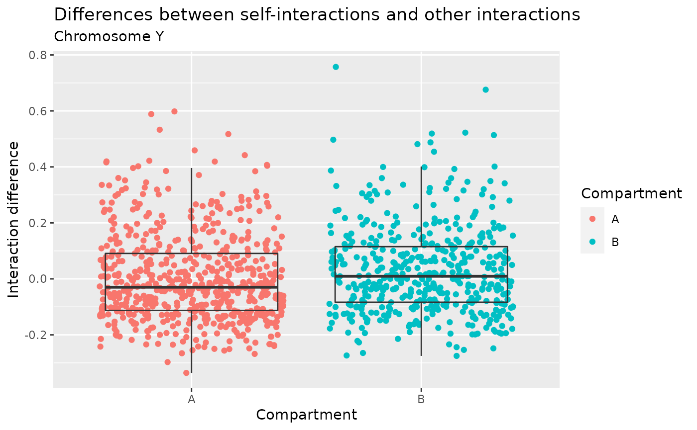

vignettes/HiCDOC.Rmd
HiCDOC.RmdThe aim of HiCDOC is to detect significant A/B compartment changes, using Hi-C data with replicates.
HiCDOC normalizes intrachromosomal Hi-C matrices, uses unsupervised learning to predict A/B compartments from multiple replicates, and detects significant compartment changes between experiment conditions.
It provides a collection of functions assembled into a pipeline:
HiCDOC can be installed from Bioconductor:
if (!requireNamespace("BiocManager", quietly=TRUE))
install.packages("BiocManager")
BiocManager::install("HiCDOC")The package can then be loaded:
HiCDOC can import Hi-C data sets in various different formats: - Tabular .tsv files. - Cooler .cool or .mcool files. - Juicer .hic files. - HiC-Pro .matrix and .bed files.
A tabular file is a tab-separated multi-replicate sparse matrix with a header:
chromosome position 1 position 2 C1.R1 C1.R2 C2.R1 ...
Y 1500000 7500000 145 184 72 ...
...The number of interactions between position 1 and position 2 of chromosome are reported in each condition.replicate column. There is no limit to the number of conditions and replicates.
To load Hi-C data in this format:
hic.experiment <- HiCDOCDataSetFromTabular('path/to/data.tsv')To load .cool or .mcool files generated by Cooler (Abdennur and Mirny 2019):
# Path to each file
paths = c(
'path/to/condition-1.replicate-1.cool',
'path/to/condition-1.replicate-2.cool',
'path/to/condition-2.replicate-1.cool',
'path/to/condition-2.replicate-2.cool',
'path/to/condition-3.replicate-1.cool'
)
# Replicate and condition of each file. Can be names instead of numbers.
replicates <- c(1, 2, 1, 2, 1)
conditions <- c(1, 1, 2, 2, 3)
# Resolution to select in .mcool files
binSize = 500000
# Instantiation of data set
hic.experiment <- HiCDOCDataSetFromCool(
paths,
replicates = replicates,
conditions = conditions,
binSize = binSize # Specified for .mcool files.
)To load .hic files generated by Juicer (Durand 2016):
# Path to each file
paths = c(
'path/to/condition-1.replicate-1.hic',
'path/to/condition-1.replicate-2.hic',
'path/to/condition-2.replicate-1.hic',
'path/to/condition-2.replicate-2.hic',
'path/to/condition-3.replicate-1.hic'
)
# Replicate and condition of each file. Can be names instead of numbers.
replicates <- c(1, 2, 1, 2, 1)
conditions <- c(1, 1, 2, 2, 3)
# Resolution to select
binSize <- 500000
# Instantiation of data set
hic.experiment <- HiCDOCDataSetFromHiC(
paths,
replicates = replicates,
conditions = conditions,
binSize = binSize
)To load .matrix and .bed files generated by HiC-Pro (Servant 2015):
# Path to each matrix file
matrixPaths = c(
'path/to/condition-1.replicate-1.matrix',
'path/to/condition-1.replicate-2.matrix',
'path/to/condition-2.replicate-1.matrix',
'path/to/condition-2.replicate-2.matrix',
'path/to/condition-3.replicate-1.matrix'
)
# Path to each bed file
bedPaths = c(
'path/to/condition-1.replicate-1.bed',
'path/to/condition-1.replicate-2.bed',
'path/to/condition-2.replicate-1.bed',
'path/to/condition-2.replicate-2.bed',
'path/to/condition-3.replicate-1.bed'
)
# Replicate and condition of each file. Can be names instead of numbers.
replicates <- c(1, 2, 1, 2, 1)
conditions <- c(1, 1, 2, 2, 3)
# Instantiation of data set
hic.experiment <- HiCDOCDataSetFromHiCPro(
matrixPaths = matrixPaths,
bedPaths = bedPaths,
replicates = replicates,
conditions = conditions
)An example dataset can be loaded from the HiCDOC package:
data(exampleHiCDOCDataSet)Once your data is loaded, you can run all the filtering, normalization, and prediction steps with the command : HiCDOC(exampleHiCDOCDataSet). This one-liner runs all the steps detailed below.
Remove small chromosomes of length smaller than 100 positions (100 is the default value):
hic.experiment <- filterSmallChromosomes(exampleHiCDOCDataSet, threshold = 100)
#> Keeping chromosomes with at least 100 positions.
#> Kept 3 chromosomes: X, Y, Z
#> Removed 1 chromosome: WRemove sparse replicates filled with less than 30% non-zero interactions (30% is the default value):
hic.experiment <- filterSparseReplicates(hic.experiment, threshold = 0.3)
#> Keeping replicates filled with at least 30% non-zero interactions.
#> Removed interactions matrix of chromosome X, condition 1, replicate R2 filled at 2.347%.
#> Removed interactions matrix of chromosome X, condition 2, replicate R1 filled at 0%.
#> Removed interactions matrix of chromosome Z, condition 1, replicate R1 filled at 0%.
#> Removed interactions matrix of chromosome Z, condition 2, replicate R1 filled at 0%.
#> Removed interactions matrix of chromosome Z, condition 2, replicate R2 filled at 0%.
#> Removed interactions matrix of chromosome Z, condition 3, replicate R1 filled at 0%.
#> Removed interactions matrix of chromosome Z, condition 3, replicate R2 filled at 0%.
#> Removed 7 replicates in total.Remove weak positions with less than 1 interaction in average (1 is the default value):
hic.experiment <- filterWeakPositions(hic.experiment, threshold = 1)
#> Keeping positions with interactions average greater or equal to 1.
#> Chromosome X: 2 positions removed, 118 positions remaining.
#> Chromosome Y: 3 positions removed, 157 positions remaining.
#> Chromosome Z: 0 positions removed, 200 positions remaining.
#> Removed 5 positions in total.Normalize technical biases such as sequencing depth (inter-matrix normalization):
hic.experiment <- normalizeTechnicalBiases(hic.experiment)
#> Normalizing technical biases.Normalize biological biases, such as GC content, number of restriction sites, etc. (intra-matrix normalization):
hic.experiment <- normalizeBiologicalBiases(hic.experiment)
#> Chromosome X: normalizing biological biases.
#> Chromosome Y: normalizing biological biases.
#> Chromosome Z: normalizing biological biases.Normalize the linear distance effect resulting from more interactions between closer genomic regions (20000 is the default value for loessSampleSize):
hic.experiment <-
normalizeDistanceEffect(hic.experiment, loessSampleSize = 20000)
#> Chromosome X: normalizing distance effect.
#> Chromosome Y: normalizing distance effect.
#> Chromosome Z: normalizing distance effect.Predict A and B compartments and detect significant differences, here using the default values as parameters:
hic.experiment <- detectCompartments(
hic.experiment,
kMeansDelta = 0.0001,
kMeansIterations = 50,
kMeansRestarts = 20
)
#> Clustering genomic positions.
#> Predicting A/B compartments.
#> Detecting significant differences.Plot the interaction matrix of each replicate:
plotInteractions(hic.experiment, chromosome = "Y")
Plot the overall distance effect on the proportion of interactions:
plotDistanceEffect(hic.experiment)
#> `geom_smooth()` using method = 'gam' and formula 'y ~ s(x, bs = "cs")'
#> `geom_smooth()` using method = 'gam' and formula 'y ~ s(x, bs = "cs")'
#> `geom_smooth()` using method = 'gam' and formula 'y ~ s(x, bs = "cs")'
List and plot compartments with their concordance (confidence measure) in each replicate, and significant changes between experiment conditions:
compartments(hic.experiment)
#> GRanges object with 91 ranges and 2 metadata columns:
#> seqnames ranges strand | condition compartment
#> <Rle> <IRanges> <Rle> | <factor> <factor>
#> [1] X 0-2328 * | 1 B
#> [2] X 2329-3972 * | 1 A
#> [3] X 3973-4794 * | 1 B
#> [4] X 4795-6575 * | 1 A
#> [5] X 6576-7808 * | 1 B
#> ... ... ... ... . ... ...
#> [87] Z 15207-16987 * | 1 B
#> [88] Z 16988-23015 * | 1 A
#> [89] Z 23016-25344 * | 1 B
#> [90] Z 25345-26166 * | 1 A
#> [91] Z 26167-27399 * | 1 B
#> -------
#> seqinfo: 3 sequences from an unspecified genome; no seqlengths
concordances(hic.experiment)
#> GRanges object with 2089 ranges and 4 metadata columns:
#> seqnames ranges strand | condition replicate compartment
#> <Rle> <IRanges> <Rle> | <factor> <factor> <factor>
#> [1] X 0-136 * | 1 R1 B
#> [2] X 137-273 * | 1 R1 B
#> [3] X 274-410 * | 1 R1 B
#> [4] X 411-547 * | 1 R1 B
#> [5] X 548-684 * | 1 R1 B
#> ... ... ... ... . ... ... ...
#> [2085] Z 26715-26851 * | 1 R3 B
#> [2086] Z 26852-26988 * | 1 R3 B
#> [2087] Z 26989-27125 * | 1 R3 B
#> [2088] Z 27126-27262 * | 1 R3 B
#> [2089] Z 27263-27399 * | 1 R3 B
#> concordance
#> <numeric>
#> [1] 0.0137133
#> [2] 0.0161103
#> [3] 0.0188770
#> [4] 0.0139651
#> [5] 0.0195456
#> ... ...
#> [2085] 0.0225031
#> [2086] 0.0239831
#> [2087] 0.0182602
#> [2088] 0.0249476
#> [2089] 0.0215806
#> -------
#> seqinfo: 3 sequences from an unspecified genome; no seqlengths
differences(hic.experiment)
#> GRanges object with 54 ranges and 6 metadata columns:
#> seqnames ranges strand | condition.1 condition.2 pvalue
#> <Rle> <IRanges> <Rle> | <factor> <factor> <numeric>
#> [1] X 1644-1780 * | 1 2 0
#> [2] X 1644-1780 * | 2 3 0
#> [3] X 1781-1917 * | 1 2 0
#> [4] X 1781-1917 * | 2 3 0
#> [5] X 1918-2054 * | 1 2 0
#> ... ... ... ... . ... ... ...
#> [50] Y 14659-14795 * | 2 3 0
#> [51] Y 14796-14932 * | 1 3 0
#> [52] Y 14796-14932 * | 2 3 0
#> [53] Y 14933-15069 * | 1 3 0
#> [54] Y 14933-15069 * | 2 3 0
#> pvalue.adjusted direction significance
#> <numeric> <factor> <character>
#> [1] 0 B->A ****
#> [2] 0 A->B ****
#> [3] 0 B->A ****
#> [4] 0 A->B ****
#> [5] 0 B->A ****
#> ... ... ... ...
#> [50] 0 A->B ****
#> [51] 0 A->B ****
#> [52] 0 A->B ****
#> [53] 0 A->B ****
#> [54] 0 A->B ****
#> -------
#> seqinfo: 3 sequences from an unspecified genome; no seqlengths
plotCompartmentChanges(hic.experiment, chromosome = "Y")
Plot the overall distribution of concordance differences:
plotConcordanceDifferences(hic.experiment)
#> `stat_bin()` using `bins = 30`. Pick better value with `binwidth`.
Plot the result of the PCA on the compartments’ centroids:
plotCentroids(hic.experiment, chromosome = "Y")
Plot the boxplots of self interaction ratios (differences between self interactions and the median of other interactions) of each compartment:
plotSelfInteractionRatios(hic.experiment, chromosome = "Y")
sessionInfo()
#> R version 4.1.0 (2021-05-18)
#> Platform: x86_64-pc-linux-gnu (64-bit)
#> Running under: Ubuntu 18.04.5 LTS
#>
#> Matrix products: default
#> BLAS: /usr/lib/x86_64-linux-gnu/openblas/libblas.so.3
#> LAPACK: /usr/lib/x86_64-linux-gnu/libopenblasp-r0.2.20.so
#>
#> locale:
#> [1] LC_CTYPE=fr_FR.UTF-8 LC_NUMERIC=C
#> [3] LC_TIME=fr_FR.UTF-8 LC_COLLATE=fr_FR.UTF-8
#> [5] LC_MONETARY=fr_FR.UTF-8 LC_MESSAGES=fr_FR.UTF-8
#> [7] LC_PAPER=fr_FR.UTF-8 LC_NAME=C
#> [9] LC_ADDRESS=C LC_TELEPHONE=C
#> [11] LC_MEASUREMENT=fr_FR.UTF-8 LC_IDENTIFICATION=C
#>
#> attached base packages:
#> [1] stats graphics grDevices utils datasets methods base
#>
#> other attached packages:
#> [1] HiCDOC_0.99.10 BiocStyle_2.20.2
#>
#> loaded via a namespace (and not attached):
#> [1] readxl_1.3.1 backports_1.2.1
#> [3] qqman_0.1.8 systemfonts_1.0.2
#> [5] splines_4.1.0 BiocParallel_1.26.0
#> [7] listenv_0.8.0 GenomeInfoDb_1.28.0
#> [9] ggplot2_3.3.4 CGHcall_2.54.0
#> [11] digest_0.6.27 htmltools_0.5.1.1
#> [13] fansi_0.5.0 magrittr_2.0.1
#> [15] memoise_2.0.0 InteractionSet_1.20.0
#> [17] openxlsx_4.2.3 limma_3.48.0
#> [19] globals_0.14.0 Biostrings_2.60.1
#> [21] matrixStats_0.59.0 R.utils_2.10.1
#> [23] pkgdown_1.6.1 colorspace_2.0-1
#> [25] textshaping_0.3.5 haven_2.4.1
#> [27] xfun_0.23 dplyr_1.0.6
#> [29] crayon_1.4.1 RCurl_1.98-1.3
#> [31] jsonlite_1.7.2 impute_1.66.0
#> [33] glue_1.4.2 gtable_0.3.0
#> [35] zlibbioc_1.38.0 XVector_0.32.0
#> [37] DelayedArray_0.18.0 car_3.0-10
#> [39] Rhdf5lib_1.14.1 future.apply_1.7.0
#> [41] HiCcompare_1.14.0 BiocGenerics_0.38.0
#> [43] abind_1.4-5 scales_1.1.1
#> [45] pheatmap_1.0.12 DBI_1.1.1
#> [47] CGHbase_1.52.0 edgeR_3.34.0
#> [49] rstatix_0.7.0 miniUI_0.1.1.1
#> [51] Rcpp_1.0.6 xtable_1.8-4
#> [53] foreign_0.8-81 stats4_4.1.0
#> [55] RColorBrewer_1.1-2 calibrate_1.7.7
#> [57] ellipsis_0.3.2 multiHiCcompare_1.10.0
#> [59] pkgconfig_2.0.3 R.methodsS3_1.8.1
#> [61] farver_2.1.0 sass_0.4.0
#> [63] locfit_1.5-9.4 utf8_1.2.1
#> [65] DNAcopy_1.66.0 tidyselect_1.1.1
#> [67] labeling_0.4.2 rlang_0.4.11
#> [69] later_1.2.0 cellranger_1.1.0
#> [71] munsell_0.5.0 tools_4.1.0
#> [73] cachem_1.0.5 generics_0.1.0
#> [75] broom_0.7.7 evaluate_0.14
#> [77] stringr_1.4.0 fastmap_1.1.0
#> [79] yaml_2.2.1 ragg_1.1.3
#> [81] knitr_1.33 fs_1.5.0
#> [83] zip_2.2.0 purrr_0.3.4
#> [85] pbapply_1.4-3 future_1.21.0
#> [87] nlme_3.1-152 mime_0.10
#> [89] R.oo_1.24.0 ggExtra_0.9
#> [91] compiler_4.1.0 curl_4.3.1
#> [93] ggsignif_0.6.2 marray_1.70.0
#> [95] tibble_3.1.2 bslib_0.2.5.1
#> [97] stringi_1.6.2 QDNAseq_1.28.0
#> [99] highr_0.9 desc_1.3.0
#> [101] forcats_0.5.1 lattice_0.20-44
#> [103] Matrix_1.3-4 vctrs_0.3.8
#> [105] pillar_1.6.1 lifecycle_1.0.0
#> [107] rhdf5filters_1.4.0 BiocManager_1.30.15
#> [109] jquerylib_0.1.4 cowplot_1.1.1
#> [111] data.table_1.14.0 bitops_1.0-7
#> [113] httpuv_1.6.1 GenomicRanges_1.44.0
#> [115] R6_2.5.0 bookdown_0.23
#> [117] promises_1.2.0.1 KernSmooth_2.23-20
#> [119] gridExtra_2.3 rio_0.5.26
#> [121] IRanges_2.26.0 parallelly_1.26.0
#> [123] codetools_0.2-18 MASS_7.3-54
#> [125] gtools_3.9.2 assertthat_0.2.1
#> [127] rhdf5_2.36.0 SummarizedExperiment_1.22.0
#> [129] rprojroot_2.0.2 withr_2.4.2
#> [131] Rsamtools_2.8.0 S4Vectors_0.30.0
#> [133] GenomeInfoDbData_1.2.6 mgcv_1.8-36
#> [135] parallel_4.1.0 hms_1.1.0
#> [137] grid_4.1.0 tidyr_1.1.3
#> [139] rmarkdown_2.9 carData_3.0-4
#> [141] MatrixGenerics_1.4.0 ggpubr_0.4.0
#> [143] aggregation_1.0.1 Biobase_2.52.0
#> [145] shiny_1.6.0